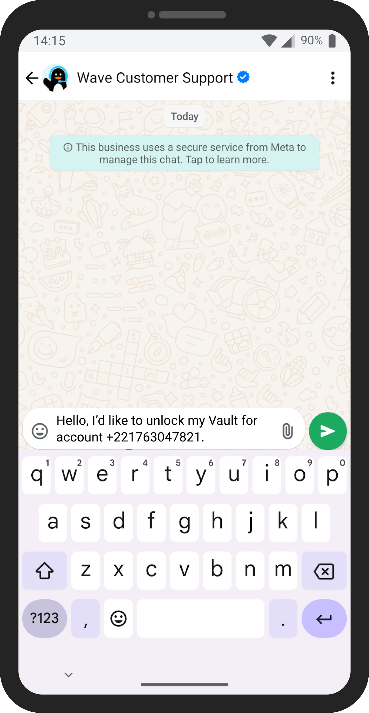
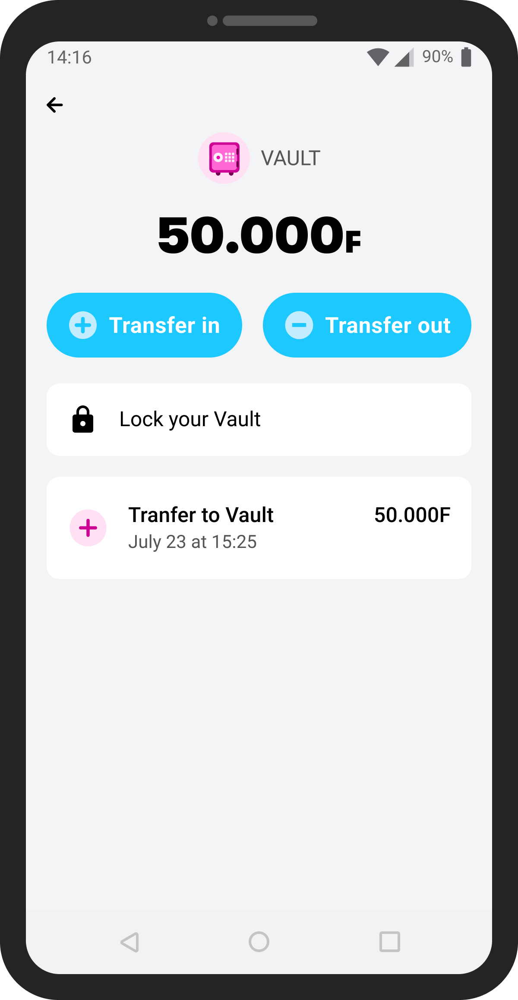
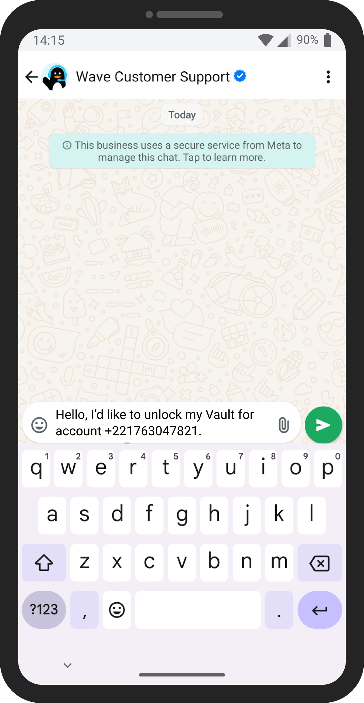
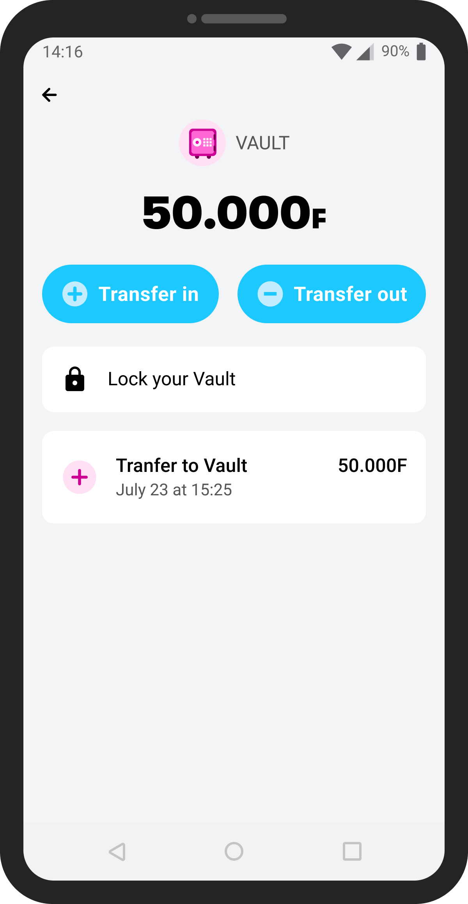

Vaults (locked & multiple vaults)
Principal Vault
Prior to Vaults in Wave, customers saved money by putting cash in a small wooden box, a separate Wave account that they use only for saving, or a "tontine" (rotating savings club with friends or family).
We started with one Principal Vault to ship quickly to customers. I paired with the CEO, Drew, to figure out how extensions of the feature, like multiple vaults, locked vaults, and interest-bearing vaults, would function before the first iteration of Vault was implemented.
In terms of first-time UX, the Principal Vault is really easy to use. The "0F" (Senegal uses the West African Franc, which we stylize as "F") indicates no balance and there are 2 large blue action buttons with a corresponding "+" and "-" that tell you what actions you can take.
Locked Vaults
After launching Vault, we launched Locked Vaults, which allows customers to lock their Principal Vault for a time period of their choosing. They could select from a preset time or choose a custom date.
Unlocking a Vault early
Customers can access their money when the unlock date arrives, but life happens and folks might need to use money to unexpectedly pay medical bills or help a family member.
Vaults can also be unlocked early via a Whatsapp bot if customers tap the "Transfer out" button on the Vault.
We want to help customers save money to their desired lock date and nudge them towards keeping the original locked date, but we also have to stay true to the concept that "your money is yours" (Wave's slogan of "Sa xaliss yay borom" in Senegalese Wolof).
 



Multiple Vaults
For the latest iteration of Vaults, we added multiple vault functionality. Some questions we considered:
- What's the entry point to multiple vaults that customers will understand the best?
- Do we want to shift entirely to a multi-vault homescreen or keep the "Principal Vault --> Multiple vault homescreen" concept?
- What presets should we include? What do people want to save for?
We kept the Principal Vault as the first "Vault" screen and added a grey button with a leading + icon in the top right of the screen. Tapping "Add Vault" would show a presets screen where customers could choose from a list or create their own custom Vault.

Customers can edit the name or emoji of any Vault (except the Principal) at any time.